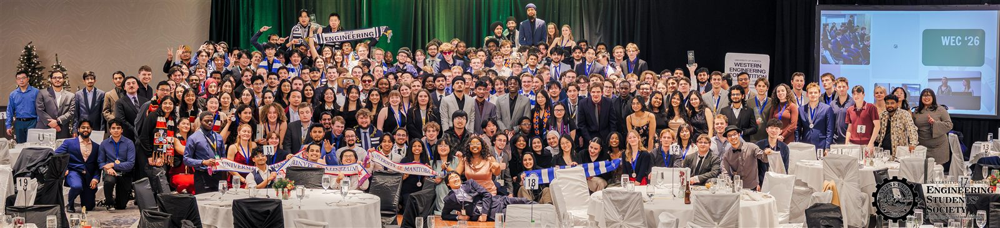
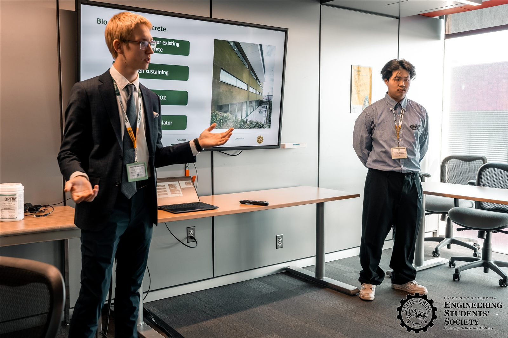
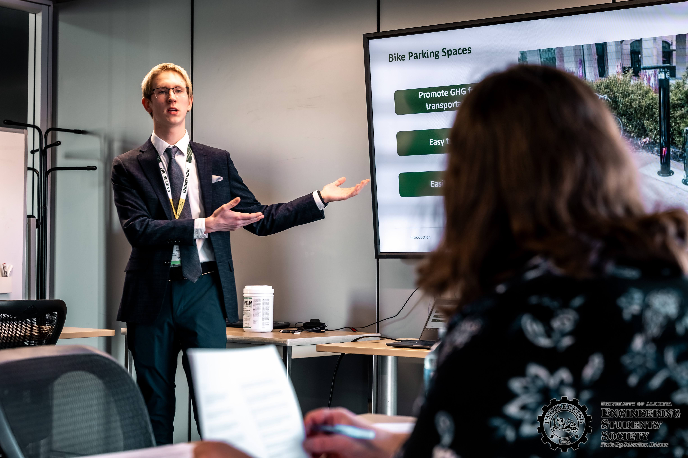

Western Engineering Competition 2026



Overview
I had an opportunity to participate in the Western Engineering Competition 2026 in the Re-engineering category representing British Columbia Institute of Technology. First time being at an event like this taught me a lot about engineering, teamwork, and problem-solving. It was a great experience to work with a team with my friends and compete against other universities. This experience that helped me grow as an engineer and inspired me to keep learning and improving my skills.
Design & Challenges
First case was to re-engineering the Windsor Car Park at UofA campus. The idea I am most proud of was to put bio-receptive concrete on the sides of the parking lot. Second case was to find a purpose for the tons of waisted construction materials. We decided to repurpose them into useful structures for the campus as well as make art pieces from them.
Results
We did not place in the competition, but we gained valuable experience and knowledge that will help us in future projects.
Back to projects